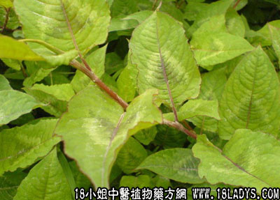

(本文解释权归中药材天地网兄弟站-18小姐中医植物药方网所有,如需转载请注明出处)
火炭母(中药材植物名:火炭母)(植物科目:蓼科)

别名：火炭星、盲更蔗、天师印、假糖梅、斑鸠饭、毛甘蔗。
植物名：火炭母
生长环境：本品为直立或半扳援状，多年生草木。生于水沟边、湿地，或荒草灌木林边，性较喜阴湿。
分布：广东各地及南方各省均有分布。
入药部分：全草。
采集期：全年有产，夏天较多，但以秋收为宜。
自采地点：荒地、田基边。
性味：性凉、味微酸。
功能：清大肠热、消滞。
主治、用量和用法：①疴痢：干用1至2两，或生用2至4两，清水煎服；②疴血：干用1至2两，或生用两，猪血适量；清水煎服；③湿热肚痛：干用1至2两，清水煎服；④大肠结热：用法同上；⑤内伤咳血，配伍用；⑥疮疖：生用适量，加糖，捣烂外敷患处。
验方：1、（治麻后痢方）火炭母根5钱，干荞丝5钱，清水二碗，煎成一碗，分二次服。
（方解）火炭母去大肠湿热，消食滞；干荞丝止麻后痢，合而用之，无过于消导、收涩之弊。
（方歌）麻后痢疾气多虚，补散攻利四忌须。炭母荞须无偏弊，民间经验法可推。
参考资料：《广州常用草药验方集解》治疗大便下血经验方：火炭母2两，簕苋菜头4两，清水六碗，煎成碗半，分二次服。
（方解）便血多因于常食煎炒燥热，致令大肠结热，便秘而发生出血。患痔疮者，亦常有便血可能。本方火炭母去大肠热，止痢止血；簕苋菜能清湿热，兼有利水及疗痔疮作用。两药配合，可防大肠结热、痔疮下血。
（方歌）大便下血火炭母，清热去湿法最高。簕苋菜头来协助，肠风痔血总能甦。
(本文解释权归中药材天地网兄弟站-18小姐中医植物药方网所有,如需转载请注明出处)